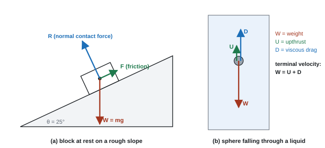
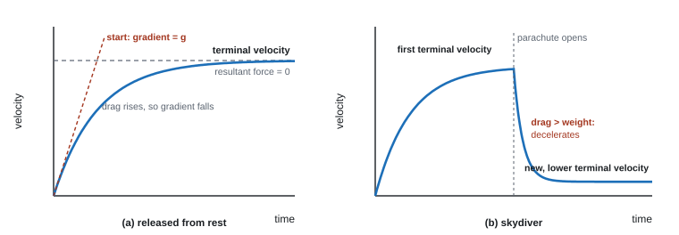

Forces & Momentum
Motion tells you how things move. Forces tell you why. On this page you'll learn to draw free-body diagrams, use Newton's three laws, see why a skydiver stops speeding up, and use momentum to predict what happens when things collide or fly apart. Nearly every mechanics question starts with a free-body diagram, so that's where we begin.
Spec8Free-body force diagrams and centre of gravity
Draw and interpret free-body diagrams for a particle or for an extended rigid body, using the idea of the centre of gravity.
What a free-body diagram is
A diagram of one object on its own, showing every force acting on it (not forces it exerts on other things).
- Draw the object as a dot (particle) or a simple shape (extended body).
- Draw each force as an arrow starting on the object (on the dot), pointing the right way, drawn with a ruler.
- Make arrow lengths show relative sizes. Forces that balance get equal lengths.
- Label each arrow with its name: weight (W or mg), normal contact force (R or N), friction (F), tension (T), drag / air resistance (D), upthrust (U), thrust.
- Weight acts vertically down from the centre of gravity (16).
- The normal contact force is perpendicular to the surface.
- Friction acts along the surface, opposing (attempted) sliding. Drag acts opposite to the velocity.
- Only forces go on the diagram. Never draw "ma", velocity, acceleration, the resultant, or components (mg sin θ, mg cos θ) as extra forces.

Particle or extended body?
- Particle: all forces act through one point. Use it when only translation (moving along) matters.
- Extended rigid body (a beam, ladder, person): forces act at different points, so they can cause turning. Weight acts at the centre of gravity; supports act where they touch. This matters for moments (15, 16).
- Three forces in equilibrium (not parallel): drawn tip to tail they make a closed triangle, and their lines of action pass through one point.
- "−1 for each extra force; −1 if any arrow does not touch the dot; −1 if any arrow is not close to vertical" (for a sphere in oil) (WPH11 Oct 2019 Q15).
- Lengths are often marked: "length of weight arrow ≈ length of drag + upthrust" (WPH11 Jan 2024 Q15); "weight and normal arrows equal and twice the forward-force arrow" (WPH11 Jan 2026 Q11).
- Weight labels accepted: "weight", "W", "mg". Not "G". "Do not allow more than three arrows" when three forces are expected.
Often asked as: forces on a sledge on a slope, a sphere in oil, a ball hanging in water, a train engine; adding forces to an extended body (weight at the centre of gravity, reaction at a pivot); MCQ "which force is wrongly drawn?".
- Adding a drag or friction arrow when the question says it is negligible: an extra arrow scored 0 (WPH11 Oct 2024 Q16).
- Drawing a "forward force" for something moving at constant velocity with nothing pushing it.
- Drag instead of upthrust for an object held still in water (WPH11 Jan 2020 Q19).
- Freehand arrows, arrows not touching the object, unequal lengths for balanced forces.
- When forces come in pairs, name what exerts the force on what: "the Earth on the person" (WPH11 Oct 2020 Q13).
- Upthrust acts through the centre of gravity of the displaced fluid; as a boat tilts, this point moves, which can turn the boat back upright (WPH11 Oct 2019 Q14).
Spec9Newton's first and second laws (F = ma) and terminal velocity
Use ΣF = ma (Newton's second law, constant mass), including the first law case where a = 0 (at rest or constant velocity). Use the term terminal velocity.
Newton's first law
An object stays at rest or moves at constant velocity unless a resultant force acts on it. Resultant force = 0 ⇔ acceleration = 0. (Moving does not need a force; changing velocity does.)
Newton's second law
Newton's second law
ΣF = resultant (net) force in N, m = mass in kg, a = acceleration in m s⁻². The acceleration is in the direction of the resultant force. 1 N is the force that gives 1 kg an acceleration of 1 m s⁻².
Method:
- Free-body diagram.
- Choose a positive direction (usually the direction of the acceleration).
- ΣF = (forces in + direction) − (forces in − direction) = ma.
Standard set-ups from past papers:
| Situation | Equation (+ = direction of acceleration) |
|---|---|
| Rocket lifting off | thrust − W = ma |
| Lift / trampoline / cable pulling up | T − W = ma |
| Sphere falling in a fluid | W − U − D = ma |
| Sliding down a slope with friction | mg sin θ − F = ma |
| Car on the level | driving force − resistive forces = ma |
a car
A 1200 kg car has a driving force of 3000 N and total resistive forces of 900 N.
ΣF = 3000 − 900 = 2100 N. a = 2100 ÷ 1200 = 1.75 m s⁻² (1.8 m s⁻² to 2 s.f.).
what a scale reads in a lift
A 70 kg person stands on scales in a lift accelerating upwards at 1.5 m s⁻². What do the scales read?
The scales read the normal contact force R, not the weight. Up +: R − mg = ma.
R = m(g + a) = 70 × (9.81 + 1.5) = 790 N (their weight is still 70 × 9.81 = 687 N).
Accelerating downwards (or decelerating while going up), R < mg and the person "feels lighter".
Terminal velocity

Explain it as a chain, in terms of forces:
- At release, v = 0 so drag = 0. The only force is weight (ignoring upthrust), so a = g.
- As speed increases, drag increases, so the resultant force (W − D) decreases and the acceleration decreases (the speed still rises, just more slowly).
- Eventually drag (+ upthrust) = weight. Resultant force = 0, so acceleration = 0, and the object moves at a constant terminal velocity (Newton's first law).
Parachute opening: drag suddenly increases (larger area), so drag > weight, the resultant force is upwards and the skydiver decelerates. As speed falls, drag falls, the deceleration decreases, until drag = weight again at a lower terminal velocity.
Vehicles have a "terminal velocity" too: a car reaches top speed when the driving force equals the resistive forces.
- Terminal velocity chain (5 marks, WPH11 Jun 2025 Q20): "air resistance > weight → resultant force upwards → deceleration"; "as speed decreases, air resistance decreases, so deceleration decreases"; "until air resistance (+ upthrust) = weight, so resultant force = 0 and acceleration = 0".
- "Allow drag for air resistance." "Ignore 'forces become balanced'" and "ignore 'speed is constant'" unless the resultant force step is there.
- Terminal velocity: "constant (maximum) velocity when the resultant force is zero (W = D + U)".
- Resultant force: "the single force that has the same effect as all the forces acting".
- If the question says "using Newton's laws", name the law you use at each step.
Often asked as: ΣF = ma with two or three forces (rocket, trampolinist, lift bag, boat); "explain why the sphere reaches terminal velocity"; parachute opening; 6-mark force explanations (skydiver, lift and scales, bungee jumper, balloon).
- Treating thrust as the resultant force and forgetting the weight.
- Explaining only the steady state, and not why the object accelerated first (or the reverse). Cover both stages.
- "Decreasing acceleration means decreasing velocity." No: the velocity still increases, more slowly.
- Answering in energy when the question says "in terms of forces".
- Saying a person in a lift "weighs less". Their weight is unchanged; the contact force changes.
- Quoting all three laws without applying them to the situation.
6-mark linkage answers
These are marked as up to 4 marks for indicative points and up to 2 for linking them into a logical chain. 6 points with clear reasoning = 6; 4 points = 4 at most.
- Tell the story in time order, one stage at a time ("at the start… as it speeds up… eventually…").
- For each force: name it, give its direction and what exerts it. Say "resultant force" and give its direction.
- Cover every stage the question asks about, and refer to the graph if there is one.
- A balance, bathroom scale or force plate reads the normal contact force, not the weight (WPH11 Jan 2022 Q14, Oct 2024 Q15).
- Changing mass: a rocket's acceleration increases as fuel burns, because both its weight and its mass fall (WPH11 Oct 2023 Q11).
- Force = rate of change of momentum, F = Δp/Δt (see 13) (WPH11 Jan 2021 Q14).
A car of mass 1200 kg has a driving force of 3000 N. The total resistive force on it is 900 N. (a) Calculate its acceleration. (b) Assuming the forces stay constant, how long does it take to reach 20 m s⁻¹ from rest?
Show solution
(a) Taking the direction of motion as positive, the resultant force is
\[ F = 3000 - 900 = 2100\ \text{N} \qquad a = \frac{F}{m} = \frac{2100}{1200} = 1.75\ \text{m s}^{-2} \](b) The acceleration is constant, so use \(v = u + at\):
\[ t = \frac{v-u}{a} = \frac{20 - 0}{1.75} = 11.4\ \text{s} \]A car of mass 1000 kg tows a trailer of mass 500 kg along a level road. The driving force is 2400 N. The resistive forces are 300 N on the car and 200 N on the trailer. Calculate (a) the acceleration and (b) the tension in the tow bar.
Show solution
(a) Treat the car and trailer as one body of mass 1500 kg. The tension is internal (the car pulls the trailer, the trailer pulls back on the car), so it cancels out:
\[ a = \frac{2400 - 300 - 200}{1500} = \frac{1900}{1500} = 1.27\ \text{m s}^{-2} \](b) Now draw a free-body diagram of the trailer alone. Forwards: tension \(T\). Backwards: 200 N. Apply \(F = ma\) to the trailer:
\[ T - 200 = 500 \times 1.267 \quad\Rightarrow\quad T = 833\ \text{N} \]Check with the car: \(2400 - 300 - 833 = 1267\ \text{N} = 1000 \times 1.267\). It works.
A 65 kg student stands on scales in a lift. Find the reading of the scales, in newtons, when the lift (a) accelerates upwards at 1.2 m s⁻², (b) moves up at a constant 3.0 m s⁻¹, (c) slows down at 1.2 m s⁻² while moving up.
Show solution
Up is positive, so \(R = m(g + a)\).
\[ \text{(a)}\ \ R = 65(9.81 + 1.2) = 716\ \text{N} \qquad \text{(b)}\ \ R = 65 \times 9.81 = 638\ \text{N} \](c) Slowing down while moving up means the acceleration is downwards, so \(a = -1.2\ \text{m s}^{-2}\):
\[ R = 65(9.81 - 1.2) = 560\ \text{N} \]A skydiver and her kit have a total mass of 85 kg. (a) What is the drag on her at terminal velocity? (b) Just after her parachute opens, the drag is 2400 N. Calculate her acceleration at that moment.
Show solution
(a) At terminal velocity the resultant force is zero, so drag = weight:
\[ D = mg = 85 \times 9.81 = 834\ \text{N} \](b) The resultant force is now upwards:
\[ F = 2400 - 834 = 1566\ \text{N} \qquad a = \frac{1566}{85} = 18.4\ \text{m s}^{-2}\ \text{upwards} \]She is still moving down; the upward acceleration means she is slowing down.
Spec10Gravitational field strength and weight
Use g = F/m and W = mg.
Gravitational field strength
Weight
- Gravitational field strength g = the gravitational force per unit mass (weight per unit mass). Unit N kg⁻¹. Near the Earth's surface, g = 9.81 N kg⁻¹.
- Mass (kg, scalar) is the amount of matter; it is the same everywhere. Weight (N, vector) is the gravitational force on the mass, acting towards the centre of the planet; it depends on g.
- N kg⁻¹ = m s⁻². In free fall (weight the only force), a = W ÷ m = g, so every object falls with the same acceleration whatever its mass. A hammer and a feather dropped on the Moon land together.
weight on the Moon
An astronaut has mass 75 kg. g on the Moon = 1.63 N kg⁻¹.
WMoon = 75 × 1.63 = 122 N. WEarth = 75 × 9.81 = 736 N. The mass is still 75 kg.
- "Use of W = mg" is a mark by itself. An answer in kg where a force was asked loses it.
- g defined as "weight per unit mass" or "force per unit mass".
- Free fall: "weight is the only force acting". This is not the same as terminal velocity.
Often asked as: MCQ definition of g; using g for Mars or the Moon (value given in the question); "is the probe in free fall?" (compare its acceleration with g); W = mg inside almost every dynamics, upthrust and energy question.
- Forgetting to multiply by g (using a mass in kg as a force).
- Using g = 10 m s⁻²: loses a mark.
- Saying gravity "gets weaker" over the few metres of a lift ride or a jump. Near the surface, g is constant.
An astronaut has a mass of 80 kg. On the Moon \(g = 1.62\ \text{N kg}^{-1}\). (a) Find her weight on Earth and on the Moon. (b) What horizontal resultant force would give her an acceleration of 2.0 m s⁻² on the Moon?
Show solution
\[ \text{(a)}\ \ W_{\text{Earth}} = 80 \times 9.81 = 785\ \text{N}, \qquad W_{\text{Moon}} = 80 \times 1.62 = 130\ \text{N} \](b) \(F = ma = 80 \times 2.0 = 160\ \text{N}\), exactly the same as on Earth. Her weight changed, but her mass (her inertia) did not. A Moon walker finds things easy to lift but just as hard to push into motion sideways.
Spec12Newton's third law
Know Newton's third law and the properties of the pair of forces in an interaction between two bodies.
The law
If body A exerts a force on body B, then B exerts a force on A that is equal in size and opposite in direction.
A third-law pair always:
- acts on two different bodies (one force on each);
- is the same type of force (both gravitational, both contact, both magnetic…);
- is equal in magnitude and opposite in direction;
- acts at the same time and along the same line.
Examples
| Force | Its third-law partner |
|---|---|
| Earth pulls the apple down (weight) | apple pulls the Earth up (gravitational) |
| Foot pushes the ground backwards | ground pushes the foot forwards (this is what moves you) |
| Rocket pushes exhaust gas down | gas pushes the rocket up (thrust) |
| Ball in water: water pushes the ball up (upthrust) | ball pushes the water down, so a balance under the beaker reads more |
First law or third law? The book on a table
A book rests on a table. Its weight W (Earth on book, gravitational) and the normal contact force R (table on book, contact) are equal and opposite. They are not a third-law pair: they act on the same body and are different types. They balance because the book is in equilibrium (first law). The partner of W is the book pulling the Earth up; the partner of R is the book pushing down on the table.
Why third-law forces don't cancel: they act on different objects, so they never appear on the same free-body diagram.
- Not a pair because "the forces act on the same object" and "they are different types of force" (WPH11 Jun 2022 Q11).
- A pair: "equal in magnitude, opposite in direction, same type, act on different bodies".
- Applying it: "P exerts a force on Q, so Q exerts a force on P; by Newton's third law the forces are equal and opposite" (WPH11 Jun 2022 Q17).
Often asked as: "are these two forces a Newton's third law pair? Explain"; MCQs choosing the partner force; applications (shunting engine and rail, ball in water on a balance, racket and ball, gliders).
- Not saying which object exerts the force and which object it acts on. Write "the rail exerts a forward force on the engine".
- Giving only "equal and opposite" without saying why the two named forces fail the test.
- "Same but opposite": say equal in size and opposite in direction.
- Mixing up the second and third laws. A third-law pair never adds to zero on one body.
Spec13Momentum
Understand that momentum is defined as p = mv.
Momentum
p = momentum (kg m s⁻¹, or N s), m = mass (kg), v = velocity (m s⁻¹).
- Momentum is a vector, in the direction of the velocity. In one dimension, use + and − signs.
- A slow heavy object and a fast light one can have the same momentum.
Momentum and force
Newton's second law can also be written as force = rate of change of momentum (beyond the spec wording, but examined):
Force as rate of change of momentum
With constant mass this is just F = ma. The product FΔt is the change in momentum (sometimes called impulse). Spreading the change over a longer time means a smaller force: crumple zones, airbags, bending your knees on landing.
momentum and a rebound
A cricket ball of mass 0.16 kg moves at 35 m s⁻¹: p = 0.16 × 35 = 5.6 kg m s⁻¹.
A 0.060 kg ball hits a wall at 20 m s⁻¹ and rebounds at 15 m s⁻¹. Take towards the wall as +.
Δp = m(v − u) = 0.060 × (−15 − 20) = −2.1 kg m s⁻¹ (the change is away from the wall).
If contact lasts 0.050 s, the average force on the ball = 2.1 ÷ 0.050 = 42 N, away from the wall.
Start from Newton's second law and write the acceleration as change in velocity over time:
\[ F = ma = m\,\frac{v-u}{\Delta t} \]If the mass is constant it can go inside the bracket:
\[ F = \frac{mv - mu}{\Delta t} = \frac{\Delta p}{\Delta t} \]The resultant force equals the rate of change of momentum. Multiplying by \(\Delta t\) gives the impulse \(F\Delta t = \Delta p\), which is why airbags and crumple zones work: making \(\Delta t\) longer makes the force for the same \(\Delta p\) smaller.
- "Use of p = mv" is a mark in nearly every collision question. A momentum or velocity answer without a unit loses the last mark (WPH11 Jan 2025 Q14).
- Units: kg m s⁻¹ or N s. kg m s⁻² is the unit of rate of change of momentum (= N) (WPH11 Jan 2021 Q14).
Often asked as: p = mv for an object; total momentum of a system; MCQs on the unit; F = Δp/Δt for a collision or a rocket.
- Confusing momentum (mv) with kinetic energy (½mv²).
- Ignoring direction in a rebound: the change is 20 − (−15) = 35, not 20 − 15 = 5.
- Leaving mass in grams.
Spec14Conservation of linear momentum
Know the principle of conservation of linear momentum, relate it to Newton's laws, and apply it to problems in one dimension.
The principle
The total momentum of a system stays constant, provided no external (resultant) force acts on the system (a closed system). So:
Conservation of momentum
Conservation of momentum (two bodies)
Link to Newton's laws
When A and B collide, A pushes B and B pushes A with equal and opposite forces (third law), for the same time. So FΔt (the change in momentum) is equal and opposite for each body (second law as F = Δp/Δt). One gains exactly what the other loses: the total is unchanged. The forces between the two are internal; only an external force could change the total.
Collisions and explosions
- Collision, sticking together: m₁u₁ + m₂u₂ = (m₁ + m₂)v.
- Explosion / recoil from rest: total momentum before = 0, so after, the two pieces move in opposite directions with equal-sized momenta (a gun recoils; a skateboarder throwing a ball rolls backwards).
- Momentum is always conserved in a closed system. Kinetic energy is not necessarily conserved:
- elastic collision: total KE the same before and after;
- inelastic collision: some KE is transferred to heat, sound and deforming the objects. Objects that stick together always lose KE;
- in an explosion, KE increases (it comes from a chemical or elastic store).
trolleys that stick
A 0.80 kg trolley at 3.0 m s⁻¹ hits a stationary 1.60 kg trolley; they stick together.
Before: 0.80 × 3.0 + 1.60 × 0 = 2.4 kg m s⁻¹. After: (0.80 + 1.60)v = 2.4 → v = 1.0 m s⁻¹ in the original direction.
KE before = ½ × 0.80 × 3.0² = 3.6 J. KE after = ½ × 2.40 × 1.0² = 1.2 J. KE is lost, so the collision is inelastic.
an explosion (spring-loaded trolleys)
Two trolleys of mass 0.50 kg and 0.75 kg are pushed apart by a spring from rest. The 0.50 kg trolley moves left at 0.60 m s⁻¹. Take right as +.
0 = 0.50 × (−0.60) + 0.75v → v = 0.30 ÷ 0.75 = 0.40 m s⁻¹ to the right.
Method
- Sketch before and after, with masses and velocity arrows. Choose + direction.
- Write total momentum before = total after, with signs.
- Solve. A negative answer means the object moves in the − direction: say so.
- If you're given kinetic energy, find v first from Ek = ½mv², then p = mv.
Two bodies A and B collide. During the collision, A pushes on B with force \(F\). By Newton's third law, B pushes on A with force \(-F\), and the two forces last for the same time \(\Delta t\).
Newton's second law in momentum form, \(F = \Delta p / \Delta t\), applied to each body:
\[ \Delta p_B = F\,\Delta t \qquad\qquad \Delta p_A = -F\,\Delta t \]Add them to get the change in the total momentum:
\[ \Delta p_A + \Delta p_B = -F\Delta t + F\Delta t = 0 \]The total cannot change. If an outside force (friction, say) also acted, it would add its own \(F\Delta t\) and the total would change, which is why the principle needs "no resultant external force".
So for any collision or explosion in one dimension:
\[ \boxed{m_A u_A + m_B u_B = m_A v_A + m_B v_B} \]- Principle (2 marks): "the total momentum (of a system) is constant / total before = total after"; "provided no external forces act / in a closed system" (WPH11 Oct 2025 Q14, Jan 2019 Q15).
- "A negative sign is sufficient to show the direction reversed", but you may be asked to state what it means (WPH11 Jan 2023 Q16).
- Showing momentum is conserved: calculate the total before and after with numbers (WPH11 Oct 2023 Q12). Repeating the stem scores nothing.
- Two credited explanations (WPH11 Jun 2026 Q13): momentum conserved, so equal and opposite changes in momentum; or third-law forces equal and opposite for the same time, so equal Δp. The heavier object has the smaller change in velocity.
Often asked as: state the principle; collisions and explosions (trolleys, gliders, a boat ejecting steam, a skater throwing a ball); KE lost in a collision; "explain in terms of momentum why…".
- Leaving out "total" or "sum" from the statement. It is the most common lost mark.
- Stating the condition without applying it to the named system ("no external force acts on the two cars").
- Giving both objects positive momentum when they move in opposite directions.
- Assuming objects stick together when the question doesn't say so.
- Equating the GPE of one trolley to the KE of two after a collision: momentum must be used for the collision itself (WPH11 Oct 2019 Q12).
- Answering in forces when the question says "in terms of momentum" (or the reverse).
- Impulse route: average force = Δp ÷ Δt (WPH11 Jun 2022 Q17).
- Rocket thrust = rate of change of momentum of the exhaust gases (WPH11 Jan 2023 Q16).
- KE before and after: a perfectly inelastic collision always loses KE (WPH11 Jun 2021 Q11).
A trolley of mass 0.80 kg moving at 0.50 m s⁻¹ hits a stationary trolley of mass 1.20 kg. They stick together. (a) Find their velocity after the collision. (b) How much kinetic energy is transferred to other stores?
Show solution
\[ \text{(a)}\ \ 0.80 \times 0.50 + 1.20 \times 0 = (0.80 + 1.20)\,v \quad\Rightarrow\quad v = \frac{0.40}{2.00} = 0.20\ \text{m s}^{-1} \] \[ \text{(b)}\ \ E_{k,\text{before}} = \tfrac{1}{2}(0.80)(0.50)^2 = 0.100\ \text{J}, \qquad E_{k,\text{after}} = \tfrac{1}{2}(2.00)(0.20)^2 = 0.040\ \text{J} \]So 0.060 J (60% of the kinetic energy) is transferred, mostly to thermal energy and sound.
A rifle of mass 4.0 kg fires a bullet of mass 10 g at 400 m s⁻¹. Calculate the recoil velocity of the rifle.
Show solution
Everything starts at rest, so the total momentum is zero before and after. Taking the bullet's direction as positive:
\[ 0 = 0.010 \times 400 + 4.0\,v \quad\Rightarrow\quad v = -\frac{4.0}{4.0} = -1.0\ \text{m s}^{-1} \]The rifle moves back at 1.0 m s⁻¹. The minus sign tells you the direction, so keep it in your answer or state "backwards".
A railway truck of mass 12 000 kg moving at 3.0 m s⁻¹ hits a stationary truck of mass 8000 kg, and they couple together. The coupled trucks then roll 45 m before stopping. Calculate the average resistive force on them.
Show solution
Step 1, the collision (momentum):
\[ 12\,000 \times 3.0 = 20\,000\,v \quad\Rightarrow\quad v = 1.8\ \text{m s}^{-1} \]Step 2, the deceleration (SUVAT): with \(u = 1.8\), \(v = 0\), \(s = 45\):
\[ 0 = 1.8^2 + 2a(45) \quad\Rightarrow\quad a = -\frac{3.24}{90} = -0.036\ \text{m s}^{-2} \]Step 3, the force (Newton's second law):
\[ F = ma = 20\,000 \times 0.036 = 720\ \text{N} \]Momentum is conserved during the brief collision, but afterwards the resistive force is an external force, so the momentum of the trucks falls to zero.
Quick checks
A book rests on a table. Which force forms a Newton's third law pair with the weight of the book?
The weight is the Earth pulling the book gravitationally, so its partner must be the book pulling the Earth gravitationally: different body, same type, equal and opposite. The table's push on the book acts on the same body as the weight, so it can't be the partner.
A car travels along a straight, level road at a constant 25 m s⁻¹. Which statement is correct?
Constant velocity means zero acceleration, so by Newton's first law the resultant force is zero. Plenty of forces act; they just cancel, with the driving force equal to the resistive forces.
A lift is moving upwards and slowing down. Compared with the passenger's weight, the reading on bathroom scales in the lift is:
Slowing down while going up means the acceleration is downwards, so \(a\) is negative in \(R = m(g + a)\) and \(R < mg\). The direction of the velocity doesn't matter; only the acceleration does.
A skydiver falling at terminal velocity opens her parachute. Immediately afterwards:
The drag suddenly exceeds her weight, so the resultant force and the acceleration point up. She is still moving down, just more slowly each second, until the drag falls back to equal her weight.
A stationary firework explodes into two pieces. Straight after the explosion, which statement is true?
Momentum is conserved, so the total stays at zero: the pieces have equal and opposite momenta. Kinetic energy is a scalar and can't cancel; it comes from the chemical energy store of the explosive.
A 2.0 kg trolley moving at 3.0 m s⁻¹ to the right hits a 1.0 kg trolley moving at 4.0 m s⁻¹ to the left. They stick together. What is their velocity afterwards?
With right as positive: \(2.0 \times 3.0 + 1.0 \times (-4.0) = 2.0\ \text{kg m s}^{-1}\), and \(v = 2.0 / 3.0 = 0.67\ \text{m s}^{-1}\). Forgetting the minus sign gives 3.3 m s⁻¹.